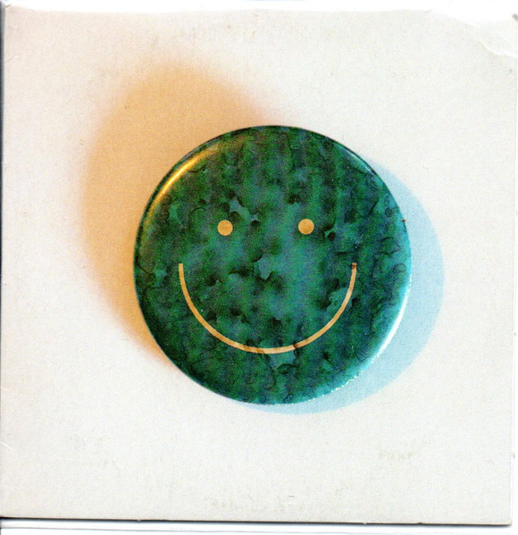

Enzo.gattelli7...
Playlist Pública
Mac DeMarco
Minhas favoritas de Mac DeMarco

| # | Título | Álbum | Adicionada em | ||
|---|---|---|---|---|---|
| 1 |
Chamber of Reflection
Mac DeMarco
|
Salad Days | 19 de Maio de 2021 | 3:51 | |
| 2 |
.jpg) For the Fisrt Time
Mac DeMarco
|
This Old Dog | 19 de Maio de 2021 | 3:02 | |
| 3 |
No Other Heart
Mac DeMarco
|
Another One | 21 de Maio de 2021 | 2:53 | |
| 4 |
My Kind of Woman
Mac DeMarco
|
2 | 22 de Maio de 2021 | 3:10 | |
| 5 |
Freaking Out the Neighborhood
Mac DeMarco
|
2 | 22 de Maio de 2021 | 2:53 | |
| 6 |
Watching Him Fade Away
Mac DeMarco
|
This Old Dog | 25 de Maio de 2021 | 2:23 | |
| 7 |
20191009 I Like Her
Mac DeMarco
|
One Wayne G | 25 de Maio de 2021 | 2:16 | |
| 8 |
Still Beating
Mac DeMarco
|
This Old Dog | 26 de Maio de 2021 | 3:01 | |
| 9 |
Moonlight on the River
Mac DeMarco
|
This Old Dog | 27 de Maio de 2021 | 7:02 | |
| 10 |
Another One
Mac DeMarco
|
Another One | 27 de Maio de 2021 | 2:40 | |
| 11 |

Nobody
Mac DeMarco
|
Here Comes The Cowboy | 27 de Maio de 2021 | 3:32 | |
| 12 |
On The Square
Mac DeMarco
|
Here Comes The Cowboy | 27 de Maio de 2021 | 3:29 | |
| 13 |
Goodbye Weekend
Mac DeMarco
|
Salad Days | 28 de Maio de 2021 | 2:59 | |
| 14 |
20200820 Turn My TV On
Mac DeMarco
|
One Wayne G | 28 de Maio de 2021 | 3:00 | |
| 15 |
Dreaming
Mac DeMarco
|
2 | 29 de Maio de 2021 | 2:27 | |
| 16 |
A Heart Like Hers
Mac DeMarco
|
Another One | 29 de Maio de 2021 | 4:01 | |
| 17 |
Without Me
Mac DeMarco
|
Another One | 29 de Maio de 2021 | 2:57 | |
| 18 |
One More Love Song
Mac DeMarco
|
This Old Dog | 30 de Maio de 2021 | 4:01 | |
| 19 |
 Another(Demo)One #2
Mac DeMarco
|
Another(Demo)One | 30 de Maio de 2021 | 2:46 | |
| 20 |
Blue Boy
Mac DeMarco
|
Salad Days | 30 de Maio de 2021 | 2:06 |